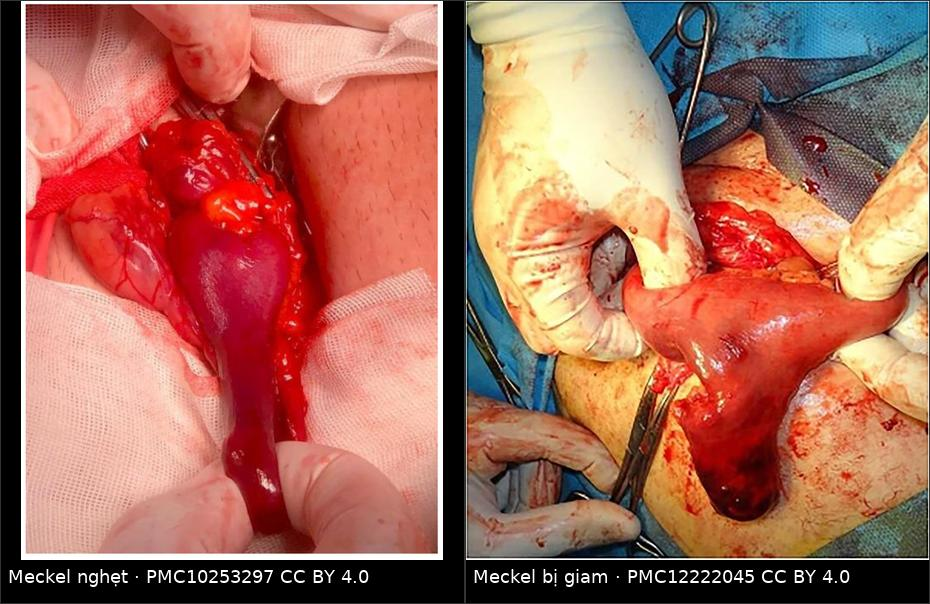
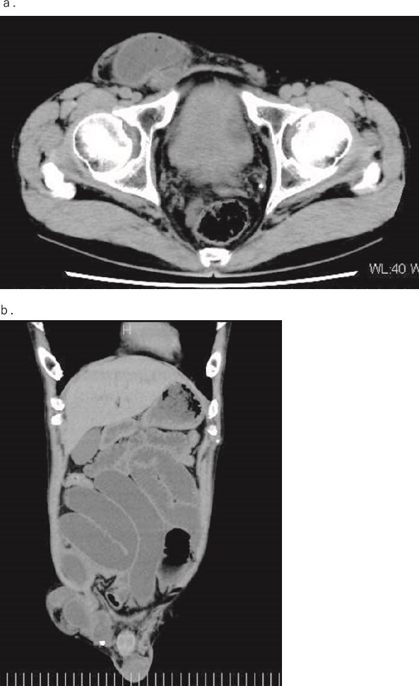
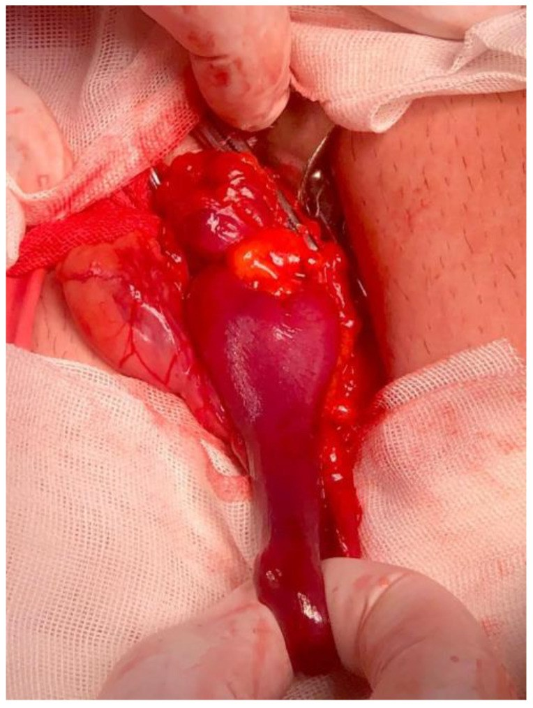
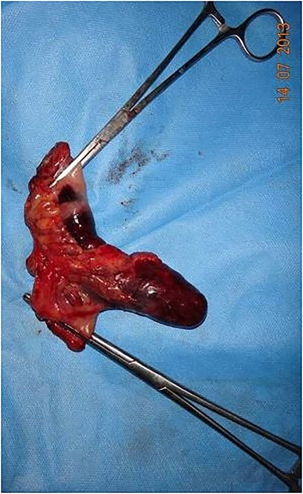

1872 — Thoát vị Littre: túi thừa Meckel trong túi thoát vị / Littre hernia
Tags: pattern:thoat-vi pattern:khoi-thanh-bung pattern:tac-ruot vung:thanh-bung vung:ruot-non protocol:CT-bung-co-can-quang incidentaloma:khong
Mức chắc chắn (certainty): tổng hợp y văn (literature synthesis) — số liệu chính từ một tổng quan hệ thống 98 ca (PMC10253297), một scoping review 21 ca thoát vị rốn ở trẻ (PMC11180487) và ba báo cáo ca có ảnh (PMC11948991; PMC12222045; PMC10253297). Chưa có thử nghiệm ngẫu nhiên; các ngưỡng xử trí là thực hành đồng thuận, chỗ suy luận được ghi rõ.
Câu chốt: Littre là "ruột thừa thứ hai" của túi thoát vị — túi thừa Meckel (Meckel diverticulum) chui vào túi bẹn/đùi/rốn. Ba con số quyết định: (1) chỉ 0,09% các thoát vị nghẹt là Littre (PMC12222045), nhưng trong 98 ca y văn 38,46% đã nghẹt và 25,93% có hoại tử (PMC10253297); (2) vị trí hay gặp nhất là ống đùi (50%), rồi ống bẹn (27,55%), rốn (11,22%) — ngược với trực giác "bẹn là chính" (PMC10253297); (3) tử vong chung 11,22%, nhưng 9/11 ca tử vong thuộc thế kỷ 18–đầu 20 → đừng dùng con số này để tiên lượng bệnh nhân hôm nay (PMC10253297).
1. Tổng quan bệnh học – cơ chế hình ảnh (TẠI SAO)
1.1 Túi thừa Meckel là gì và vì sao nó "đi lạc" vào túi thoát vị
- Túi thừa Meckel là di tích ống noãn hoàng (omphalomesenteric / vitelline duct): một túi thật (đủ 3 lớp thành ruột) nằm ở bờ đối mạc treo của hồi tràng, cách van hồi manh tràng khoảng 60 cm. Quy tắc 2 cổ điển: 2% dân số, 2 feet (≈ 60 cm) từ van hồi manh tràng, 2 inch (≈ 5 cm) dài.
- Trong tổng quan 98 ca Littre, chiều dài túi thừa trung bình 5,43 ± 3,67 cm (PMC10253297) — đúng với quy tắc 2. Túi dài + cổ hẹp là điều kiện để đầu tự do sa vào cổ thoát vị hẹp rồi bị kẹt.
- TẠI SAO hay nghẹt: túi thừa là cấu trúc cùng tận (blind-ending) nằm trên bờ đối mạc treo — không có mạc treo riêng đỡ, chỉ có động mạch ống noãn hoàng (vitelline artery) đi trong dây xơ. Khi cổ túi thoát vị chật (đặc biệt ống đùi), quai hồi tràng đi kèm bị kéo, xoay quanh túi thừa → nghẹt cuống mạch trước khi cả quai ruột kịp nghẹt.
- Niêm mạc lạc chỗ (ectopic mucosa): tổng quan ghi 21,21% có mô lạc chỗ, 12,12% có loét, 9,09% có u (PMC10253297). Mô dạ dày lạc chỗ tiết acid → loét bờ túi thừa → chảy máu hoặc thủng trong túi thoát vị, làm bệnh cảnh nặng thêm dù ruột chưa nghẹt.
1.2 Vì sao ống đùi đứng đầu bảng (50%) — và vì sao phải đọc lại con số này một cách phản biện
- Trong 98 ca: đùi 50% (49 ca), bẹn 27,55% (27), rốn 11,22% (11), bịt 3,06% (3), Spiegel 2,04% (2), qua hoành (transthoracic) 2,04% (2) (PMC10253297).
- Giải thích hợp lý: cổ ống đùi hẹp và cứng (dây chằng Cooper – dây chằng lược), nên chỉ một cấu trúc mảnh, dài như túi thừa mới dễ lọt và kẹt; quai ruột non to hơn khó lọt hơn. Đây cũng là lý do thoát vị đùi nghẹt chủ yếu ở nữ cao tuổi — trong review, đùi gặp ở nữ 34:14 (tỷ lệ 2,4:1), còn bẹn gặp ở nam 21:6 (3,5:1) (PMC10253297).
- Phản biện (bắt buộc): đây là y văn ca bệnh (case-report literature), không phải đoàn hệ dân số. Ca đùi nghẹt ở cụ bà được đăng nhiều hơn ca bẹn ở nam trẻ; thiên lệch công bố có thể thổi phồng tỷ lệ đùi. Không được suy ra "50% Littre là đùi" cho mọi bệnh nhân.
1.3 Tại sao chẩn đoán trước mổ lại khó — vật lý của "quai ruột trong túi"
- Trên X-quang bụng, dấu hiệu chỉ là mức khí – dịch / giãn ruột non của tắc ruột, không định danh được túi thừa. Vì vậy X-quang được dùng 56,14% nhưng gần như không bao giờ đặt được chẩn đoán Littre (PMC10253297).
- Trên CT, túi thừa hiện ra như cấu trúc hình ống, cùng tận, thành có bắt thuốc, nằm trong túi thoát vị, có thể chứa khí/dịch hoặc sỏi phân (fecalith); dấu hiệu này không khác một quai ruột non bị giam thông thường trừ khi thấy rõ đầu cụt (blind end) tách khỏi quai chính. CT chỉ được dùng 29,82%, và 8,77% ca dùng CT đơn thuần (PMC10253297).
- Trên siêu âm, cấu trúc hình ngón tay/ống cùng tận với dấu hiệu ruột (gut signature) nằm trong túi, không nhu động hoặc nhu động kém; siêu âm được dùng 24,56% (PMC10253297). Ở trẻ, siêu âm là bước đầu vì không bức xạ.
- Hệ quả thực hành: chẩn đoán trước mổ rất hiếm. Trong 21 ca thoát vị rốn Littre ở trẻ, chỉ 2/21 (9,5%) được chẩn đoán trước mổ (PMC11180487). Chẩn đoán xác định là trong mổ — mở túi, nhìn thấy túi thừa.
1.4 Các con số dịch tễ và kết cục (đọc kèm cảnh báo)
- Tuổi trung bình 56,69 ± 16,87; nữ 53/nam 45, tỷ lệ nữ:nam 1,2:1; bên phải 78,3% (PMC10253297).
- Cấp cứu 90,2% (55/61 ca có dữ liệu) (PMC10253297).
- Nghẹt 38,46% (35/91), hoại tử túi thừa hoặc ruột 25,93% (14/54); tắc ruột 35,62% (26/73), cao nhất ở thoát vị bẹn 45% (PMC10253297).
- Tử vong chung 11,22% (11 ca), 8,7% ở nhóm phải cắt ruột; 9/11 ca tử vong thuộc 1700–1933 → tử vong thực tế thời hiện đại thấp hơn nhiều (PMC10253297).
- Cắt túi thừa là phẫu thuật phổ biến nhất, sau đó cắt đoạn ruột; 5,48% để lại túi thừa không cắt (PMC10253297).
- Theo dõi trung bình 19,5 ± 10,29 tháng, không ca nào tái phát — nhưng thời gian theo dõi ngắn, không đủ để nói "không cắt là an toàn" (PMC10253297).
2. Mẫu hình + chẩn đoán phân biệt theo vị trí (gamut)
- Theo vị trí cổ thoát vị: bẹn (nam trưởng thành) → đùi (nữ cao tuổi) → rốn (trẻ nhỏ và người lớn) → bịt/Spiegel (hiếm, "little old lady hernia": tuổi trung bình 73,33 ± 2,36 trong review) (PMC10253297).
- Theo nội dung túi — gamut "tạng lạ trong túi thoát vị":
- Túi thừa Meckel = Littre (bài này).
- Ruột thừa = Amyand (bài 1740). Hai thể có thể cùng tồn tại: đã có ca bẹn khổng lồ chứa manh tràng + ruột thừa + túi thừa Meckel + hồi tràng (PMC13304216).
- Chỉ một phần chu vi ruột = Richter (không tắc ruột hoàn toàn, dễ thủng).
- Hai quai ruột hình W = Maydl (nguy cơ nghẹt quai giữa rất cao).
- Túi thừa bàng quang = hernia của bàng quang (CT thấy cấu trúc dịch, không có thành ruột).
- Nang mạc treo / mỡ mạc treo / mạc nối (khối đặc – dịch không có thành ruột).
- Mnemonic: Littre = Loop có Lỗ cụt (blind-ending loop); Amyand = Appendix; Richter = Ring (chỉ một vòng thành ruột); Maydl = Một chữ W (hai quai).
3. Bảng so sánh phân biệt (ma trận đối chiếu)
| Thực thể (entity) | Hình ảnh điển hình (US/CT) | Chốt vào (rule-in) | Chốt loại (rule-out) | Gợi ý xác nhận |
|---|---|---|---|---|
| Littre (túi thừa Meckel) | Ống cùng tận, thành ruột, nằm trong túi; có thể có fecalith/khí; quai hồi tràng đi kèm | Đầu cụt tách khỏi quai chính + vị trí bờ đối mạc treo + túi dài | Cấu trúc có đáy thông với lòng ruột ở cả hai phía → không phải túi thừa | Mổ mở túi; soi 60–100 cm hồi tràng; mô bệnh học |
| Amyand (ruột thừa) | Ống cùng tận ở cực manh tràng, đường kính 6–10 mm, có thể có sỏi phân | Nối liền với manh tràng, có dấu hiệu viêm ruột thừa | Ống nằm xa manh tràng, bờ đối mạc treo hồi tràng → nghĩ Littre | Mổ; không chọc/dẫn lưu qua da |
| Richter | Thành ruột một phần chu vi bị kẹp, lòng ruột vẫn lưu thông | Không có tắc ruột hoàn toàn nhưng đau + hoại tử khu trú | Tắc ruột hoàn toàn + giãn nhiều quai → không phải Richter đơn thuần | Mổ: kiểm tra thành ruột tại cổ túi |
| Maydl (W-loop) | Hai quai trong túi, quai giữa nằm trong ổ bụng | Hai quai + quai nối trong ổ bụng trên CT/mổ | Chỉ một quai trong túi → loại Maydl | Mổ: kéo kiểm tra toàn bộ quai |
| Quai ruột non giam đơn thuần | Quai giãn, thành dày, dịch trong túi, không có đầu cụt | Quai ruột liên tục đi qua cổ túi | Thấy cấu trúc cùng tận riêng → nghĩ Littre | Mổ; CT chỉ gợi ý |
| Túi thừa bàng quang trong túi bẹn | Cấu trúc dịch đồng nhất, thành mỏng, không có hơi ruột, liên tục với bàng quang | Nối với bàng quang, bờ nhẵn, không có hơi | Có hơi + fecalith + thành ruột → loại bàng quang | CT có cản quang niệu; VCUG nếu cần |
| Nang mạc treo / mỡ mạc treo | Khối dịch/đặc thuần, không có thành ruột, không có hơi | Không có thành ruột, không có hơi | Có hơi trong lòng + thành ruột → loại nang | Siêu âm/CT; mô bệnh học |

Trái: túi thừa Meckel nghẹt, tím đen sau khi mở túi thoát vị (PMC10253297, CC BY 4.0). Phải: túi thừa bị giam trong túi bẹn (PMC12222045, CC BY 4.0). Ảnh ghép letterbox, không crop.Đọc CT thế nào cho đúng (dấu hiệu định vị)
- Đường đi của quai: quai hồi tràng chui qua cổ túi rồi tới túi thừa. Nếu thấy hai cấu trúc ống trong túi — một quai đi qua và một túi cụt — thì Littre là chẩn đoán hàng đầu.
- Dấu hiệu "target" và "whirl": xoắn cuống mạch của túi thừa quanh trục → dấu xoáy (whirl sign) ở cuống; thành túi không bắt thuốc = hoại tử.
- Hơi trong thành túi (pneumatosis): dấu hiệu thủng/hoại tử, nhưng không có hơi không loại trừ hoại tử (xem mục 5).
- Cỡ và vị trí: đo chiều dài túi và đường kính cổ túi; cổ càng hẹp so với thân túi thì nguy cơ nghẹt càng cao. Đây là số đo mô tả, không có ngưỡng mm được kiểm chứng để quyết định mổ.
4. Protocol chụp + chiến lược xử trí
- Siêu âm bụng – bẹn – bìu trước (trẻ em, phụ nữ có thai): tìm cấu trúc ống cùng tận trong túi, đánh giá nhu động, dịch, thành ruột.
- CT bụng – chậu có cản quang tĩnh mạch, lát mỏng 1–2 mm, phủ tới bìu/ống đùi (trường đọc thường quy hay cắt mất vùng bẹn – bìu). Không dùng cản quang uống thường quy; nếu cần phân biệt rò/thủng thì dùng cản quang tan trong nước.
- Không nong/thẩm phân mạnh tay để "đẩy ruột lên" khi có phản ứng phúc mạc, đau nhiều, hoặc dấu nghẹt: nguy cơ giảm thể tích (reduction en masse) — đẩy cả túi thoát vị vào ổ bụng, triệu chứng dịu nhưng ruột vẫn hoại tử.
- Mổ là tiêu chuẩn vàng. Mở túi, hút dịch, đánh giá túi thừa và quai ruột; soi 60–100 cm hồi tràng để không bỏ sót túi thừa thứ hai hoặc dây xơ.
- Chọn phẫu thuật: cắt túi thừa (diverticulectomy) nếu cổ hẹp, túi thừa còn sống, không loét; cắt đoạn ruột nếu cổ rộng, hoại tử, thủng, loét chảy máu, hoặc nghi u. Không đặt lưới (mesh) khi có nhiễm bẩn/hoại tử; lưới chỉ dùng khi vùng mổ sạch (trong review, lưới được dùng nhiều hơn ở nhóm cắt túi thừa, nhưng đây là dữ liệu quan sát, không phải khuyến cáo) (PMC10253297).
- Túi thừa còn sống, tình cờ, ở người lớn: dữ liệu y văn để lại 5,48% không cắt, không tái phát trong 19,5 tháng (PMC10253297) — nhưng đây là suy luận yếu, không đủ để khuyên bỏ túi thừa ở người trẻ.
flowchart TD
A[Thoát vị bẹn/đùi/rốn + đau, không đẩy lên được] --> B{Có dấu nghẹt? đau nhiều, phản ứng phúc mạc, sốt, hơi trong thành ruột}
B -->|Có| C[Mổ cấp: mở túi, đánh giá túi thừa + quai ruột]
B -->|Không| D[Siêu âm + CT bụng-chậu lát mỏng]
D --> E{Thấy cấu trúc ống cùng tận trong túi?}
E -->|Có| C
E -->|Không| F[Theo dõi/điều trị thoát vị theo phác đồ; mổ chương trình nếu có chỉ định]
C --> G{Túi thừa còn sống, cổ hẹp?}
G -->|Có| H[Cắt túi thừa + vá thoát vị không lưới nếu nhiễm bẩn]
G -->|Không: hoại tử/thủng/loét/cổ rộng| I[Cắt đoạn ruột non + nối; gửi mô bệnh học]
H --> J[Theo dõi: nhiễm vết mổ, tắc ruột, rò]
I --> J
5. Biến thể bình thường và cạm bẫy
- Giảm thể tích (reduction en masse): "đẩy lên được" không đồng nghĩa "an toàn". Túi thoát vị + ruột nghẹt bị đẩy vào khoang tiền phúc mạc, bụng mềm giả tạo, ruột vẫn hoại tử. Không thử đẩy khi có dấu nghẹt.
- Bỏ sót vì "thỏa mãn tìm kiếm": thấy ruột trong túi là đủ để gọi "thoát vị nghẹt" rồi đóng. Phải mở túi, nhìn đầu cụt và soi hồi tràng — nếu không, Littre/Amyand/Maydl bị bỏ qua. Ca Amyand + Littre + Hodgkin (PMC13304216) là ví dụ hai bệnh cùng lúc.
- Hơi trong túi ≠ thủng: hơi có thể từ thủ thuật/ống thông hoặc từ ruột bình thường; ngược lại hoại tử không có hơi vẫn xảy ra. Quyết định dựa trên lâm sàng + thành ruột không bắt thuốc, không dựa riêng vào hơi.
- Thoát vị đùi ở cụ bà: đừng mặc định "chỉ là quai ruột"; tỷ lệ Littre cao nhất ở vị trí này (50%) và tuổi trung bình của thể bịt là 73,33 (PMC10253297).
- Thoát vị rốn ở trẻ: trong 21 ca, 61,9% đã có biến chứng và chỉ 9,5% chẩn đoán trước mổ (PMC11180487) — không được xem là "rốn lồi lành tính" khi trẻ đau.
- Mô lạc chỗ và u: 9,09% ca có u trong túi thừa (PMC10253297) — luôn gửi mô bệnh học, kể cả khi túi thừa trông lành.
- Theo dõi ngắn: "không tái phát" trong 19,5 tháng không trả lời được câu hỏi dài hạn, đặc biệt với túi thừa để lại.
6. Tự lượng giá — Blind Quiz
Ca 1 — Nam 54 tuổi, đau bụng 2 ngày, nôn, bẹn phải căng đau, không đẩy lên được.

- Hỏi: mô tả hai bất thường chính? Ba chẩn đoán phân biệt cho "nội dung túi"? Dấu hiệu nào trên CT không phân biệt được Littre với quai ruột giam?
Bấm để hiện đáp án
- Findings: (a) túi thoát vị bẹn phải chứa quai ruột non; (b) nhiều quai ruột non giãn, mức khí – dịch phía trên = tắc ruột non do thoát vị nghẹt.
- Chẩn đoán: thoát vị bẹn nghẹt; không loại trừ được Littre trên CT vì quai ruột bình thường và túi thừa Meckel đều là "ống ruột trong túi". Chẩn đoán xác định khi mổ: túi thừa Meckel 70 cm từ van hồi manh tràng, kèm thay đổi khẩu kính ruột trước – sau túi thừa.
- Phân biệt: Littre, Amyand, quai ruột giam đơn thuần, Richter, Maydl.
- Nguồn ảnh: Nakayama Y et al., J Surg Case Rep 2025 — PMC11948991 — Fig. 1, CC BY-NC 4.0.
Ca 2 — Nam 66 tuổi, bẹn nghẹt 72 giờ; mổ mở túi thấy cấu trúc tím đen.

- Hỏi: cấu trúc này là gì? Vì sao nó nghẹt dù quai ruột chính còn sống? Xử trí?
Bấm để hiện đáp án
- Findings: túi thừa hình ống, cùng tận, thành tím đen, xuất phát từ bờ đối mạc treo hồi tràng — túi thừa Meckel bị nghẹt tại cổ túi.
- Vì sao: cổ túi thừa hẹp + túi dài 5,43 cm trung bình → cuống mạch bị chèn trước khi cả quai ruột nghẹt; đây là lý do "một phần" ruột hoại tử dù bệnh nhân chỉ đau vừa.
- Xử trí: cắt túi thừa/túi thừa + đoạn ruột hoại tử; không đặt lưới trong vùng nhiễm; gửi mô bệnh học.
- Nguồn ảnh: Răcăreanu M et al., J Clin Med 2023 — PMC10253297 — Fig. 2, CC BY 4.0.
Ca 3 — Bệnh phẩm sau mổ của ca bẹn nghẹt.

- Hỏi: vì sao phải cắt đoạn ruột thay vì chỉ cắt túi thừa? Điều gì phải làm với bệnh phẩm?
Bấm để hiện đáp án
- Findings: đoạn hồi tràng được cắt kèm túi thừa — chọn cắt đoạn khi cổ túi rộng, thành túi hoại tử, hoặc không đảm bảo được miệng nối an toàn sau khi cắt túi thừa.
- Bắt buộc: mô bệnh học tìm mô lạc chỗ (21,21%), loét (12,12%), u (9,09%) — những tổn thương này quyết định theo dõi tiếp.
- Nguồn ảnh: Khamas A, Salih S, J Surg Case Rep 2025 — PMC12222045 — Fig. 2, CC BY 4.0.
Bài liên quan chéo
- 160 – Bụng cấp: tiếp cận chẩn đoán
- 161 – Viêm ruột thừa cấp
- 162 – Tắc ruột
- 1740 – Thoát vị Amyand ở trẻ
- 3103 – Rò trực tràng – niệu đạo sau xạ trị tiền liệt tuyến
Ảnh
images/1872_hoat-vi-littre_CT_PMC11948991.jpg— CT ngang + trục dọc, PMC11948991, CC BY-NC 4.0.images/1872_hoat-vi-littre_Mo_PMC10253297.jpg— túi thừa nghẹt trong mổ, PMC10253297, CC BY 4.0.images/1872_hoat-vi-littre_Mo_PMC12222045.jpg— túi thừa bị giam, PMC12222045, CC BY 4.0.images/1872_hoat-vi-littre_BenhPham_PMC12222045.jpg— bệnh phẩm cắt đoạn ruột, PMC12222045, CC BY 4.0.images/composite_littre.jpg— ảnh ghép 2 thể trong mổ, letterbox, PMC10253297 + PMC12222045, CC BY 4.0.- Chi tiết giấy phép từng file:
images/CREDITS.md.
Không dùng để chẩn đoán độc lập khi chưa có người hướng dẫn.